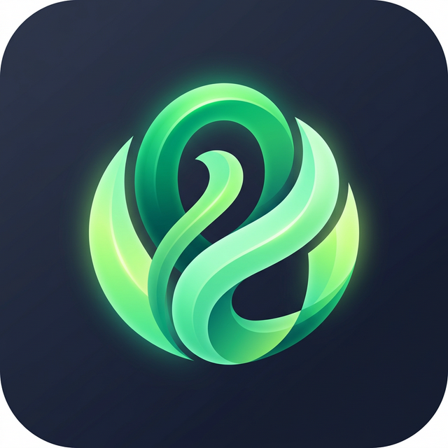
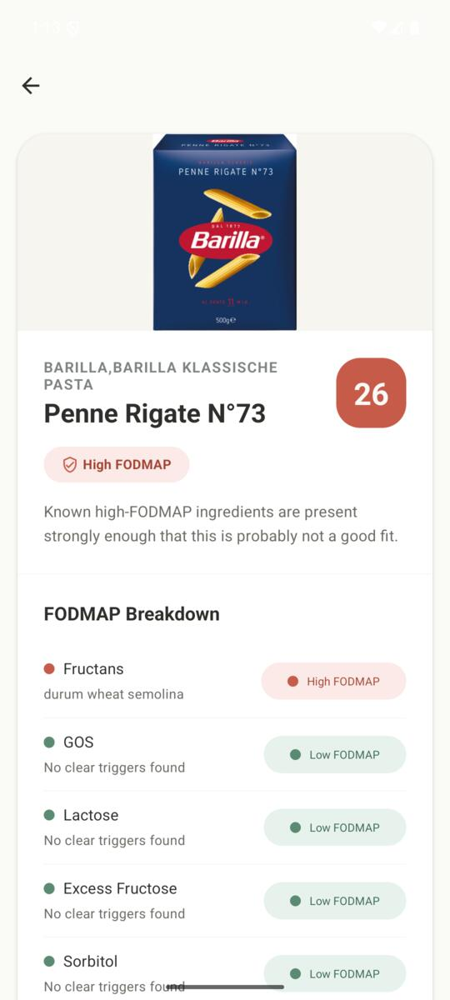
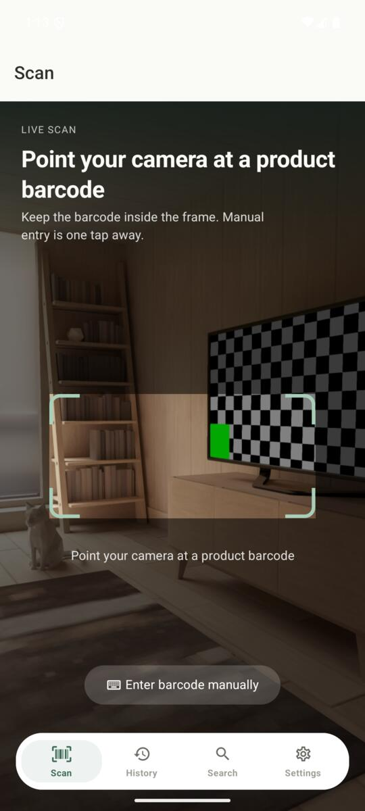
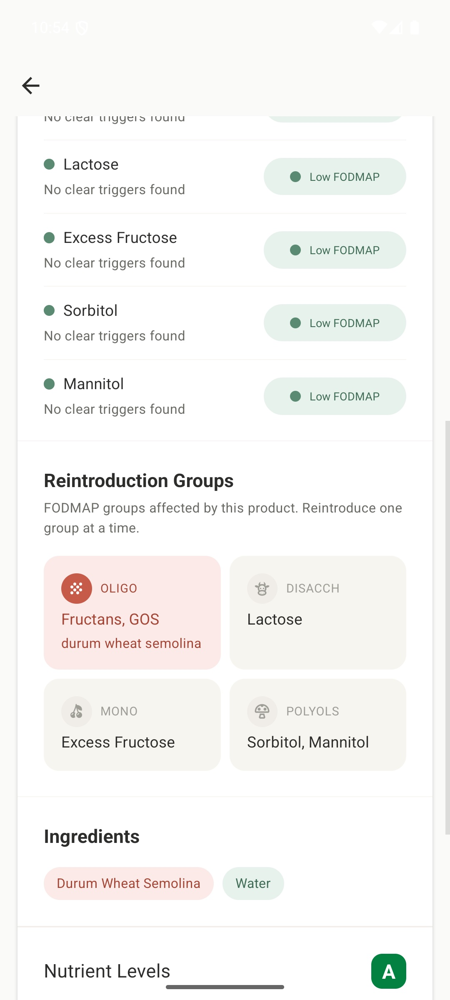
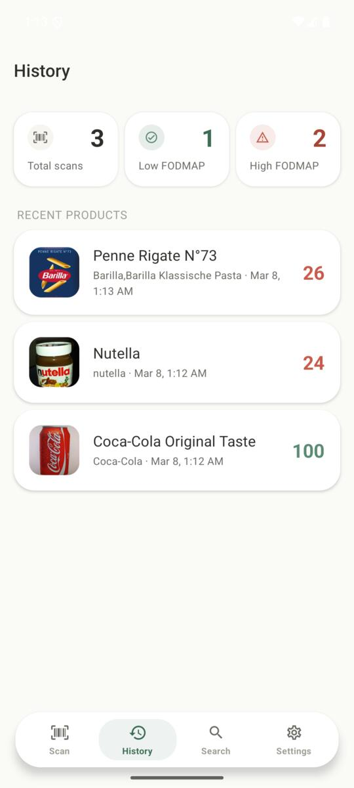
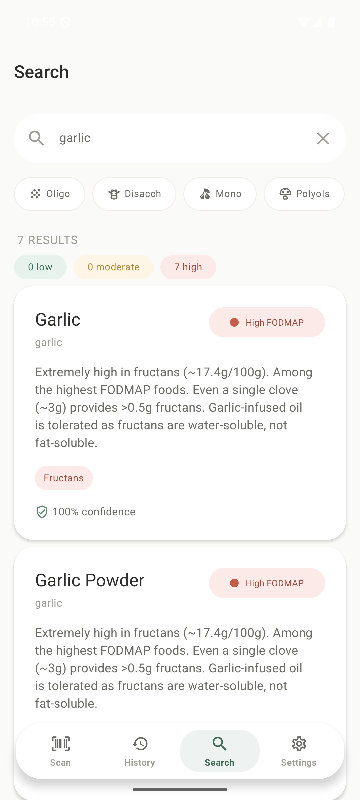

Fodmap LensScan any grocery product and instantly see its FODMAP content. Built for people who want to eat well and feel well.
Scannez n'importe quel produit et découvrez instantanément son contenu FODMAP. Conçu pour ceux qui veulent bien manger et se sentir bien.
Scannen Sie jedes Lebensmittel und sehen Sie sofort den FODMAP-Gehalt. Entwickelt für Menschen, die gut essen und sich wohl fühlen wollen.

Point your camera at any barcode. Ingredients are looked up instantly from a global food database. Pointez votre caméra vers un code-barres. Les ingrédients sont recherchés instantanément. Richten Sie Ihre Kamera auf einen Barcode. Die Zutaten werden sofort aus einer globalen Datenbank abgerufen.
A clear 0–100 score with traffic-light colors tells you whether a product is safe for your gut. Un score clair de 0 à 100 avec des couleurs de feu tricolore vous indique si un produit est sûr. Ein klarer 0–100 Score mit Ampelfarben zeigt Ihnen, ob ein Produkt verträglich ist.
See which FODMAP groups are present: Fructans, GOS, Lactose, Fructose, Sorbitol, and Mannitol. Découvrez quels groupes FODMAP sont présents : Fructanes, GOS, Lactose, Fructose, Sorbitol et Mannitol. Sehen Sie welche FODMAP-Gruppen vorhanden sind: Fruktane, GOS, Laktose, Fruktose, Sorbit und Mannit.
Every scan is saved on your device. Review past products anytime — even without internet. Chaque scan est sauvegardé sur votre appareil. Consultez vos produits à tout moment, même hors-ligne. Jeder Scan wird auf Ihrem Gerät gespeichert. Sehen Sie frühere Produkte jederzeit ein — auch offline.




Free, open-source, and built with care for your wellbeing. Gratuit, open-source et conçu avec soin pour votre bien-être. Kostenlos, Open-Source und mit Sorgfalt für Ihr Wohlbefinden entwickelt.
Download for Android Télécharger pour Android Für Android herunterladen